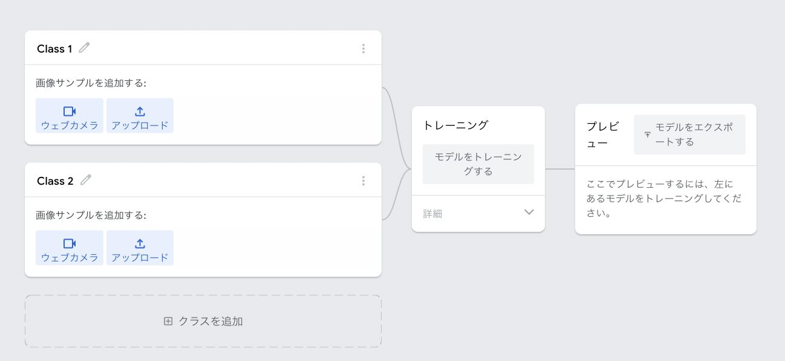
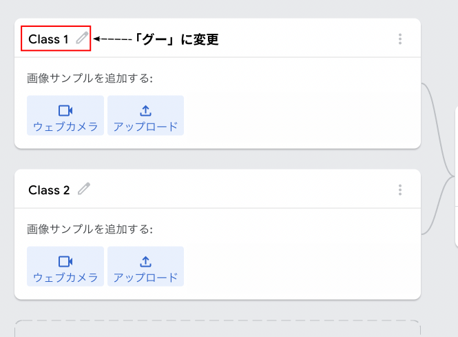
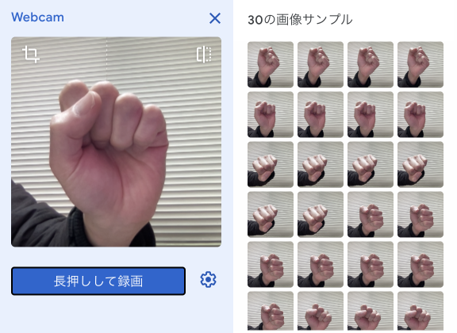
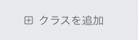
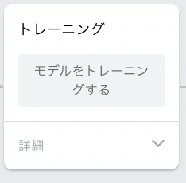
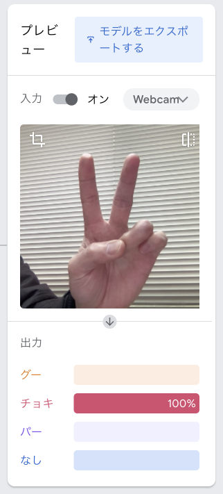
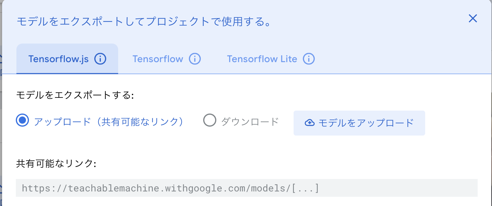

ティーチャブル・マシンで画像認識
画像プロジェクトをつくろう
では画像認識をしてみましょう。
ティーチャブル・マシンを開いたら、まず以下の手順にしたがって画像プロジェクトをつくります。
- トップ画面で「使ってみる」をクリックします。
- 「新しいプロジェクト」画面で「画像プロジェクト」をクリックします。
- 「新しいイメージプロジェクト」画面で「標準の画像モデル」をクリックします。
- 以下のような新しい画像プロジェクトが出来ます

画像を撮影して登録しよう
次は手順にしたがって認識させたい画像を撮影してティーチャブル・マシンに登録します。
今回は例として「グー」「チョキ」「パー」の画像認識をしてみましょう。
- 「Class 1」をクリックして「グー」に変更します

- その下にある「ウェブカメラ」をクリックしてカメラを起動します。もし使用許可の画面がでたら許可してください。
- カメラの映像が表示されたらカメラの位置を調整します。背景に動くものがあるとうまく画像認識ができないので、人やモニターなどは映らないようにしてください。
- カメラの位置を調整したら「長押しして録画」をクリックすると録画を開始します。では練習として録画してください。
- 撮影された画像がすごい勢いで右に表示されます。画像を消したい場合は右上の「…」をクリックして「サンプルをすべて削除」を選択して下さい。
- 撮影のやり方が分かったら本番の画像を撮りましょう。カメラの前で「グー」を作り、適当に向きを変えつつ30枚ほど撮影して下さい。なるべく画面いっぱいに映るようにするとうまく認識してくれます。

- 同じように「Class 2」を「チョキ」に変更し、「チョキ」の画像も30枚程撮影して下さい。
- 「パー」も同様に撮影しますがこのままだと画像を2つしか登録できないので、画面の下にある「クラスを追加」をクリックして登録するための枠を増やします。

- 枠を増やしたら同じように「Class 3」を「パー」に変更し、「パー」の画像も30枚程撮影して下さい。
- このままだと必ず「グー」か「チョキ」か「パー」で認識されてしまうので、何もない背景画像も撮影します。「クラスを追加」をクリックして枠を増やし、「Class 4」を「なし」に変更し、背景画像を30枚ほど撮って下さい。
学習(トレーニング)して画像認識させよう
「グー」「チョキ」「パー」「なし」の4つ画像を登録しましたが、このままではまだティーチャブル・マシンは画像認識をしてくれません。
画像認識をさせるためにはまずティーチャブル・マシンに画像を学習(トレーニング)させる必要があります。
では以下の手順で学習をして画像認識をしてみましょう。
- 「モデルをトレーニングする」ボタンを押します。

- しばらくするとトレーニングが終わり、右の「プレビュー」枠にカメラ画像が表示されます。
- カメラの前で「グー」「チョキ」「パー」をつくって下さい。可能性が高い画像のバーが一番長くなります。

学習データをアップロードする
ブラウザのタブを閉じるとせっかく学習したデータが全て消えてしまいますので、Googleのサーバに学習データをアップロードして後でも使えるようにしましょう。
では以下の手順で学習データのアップロードをしてください。
- 「プレビュー」枠にある「モデルをエクスポート」をクリックして下さい。
- ダイアログが表示されたら「モデルをアップロード」をクリックして下さい。

- アップロードが終わったら「共有可能なリンク」に表示されたアドレスをメモ帳アプリなどにコピーし、適当な名前を付けて保存して下さい。
- ティーチャブル・マシンのタブを閉じて終了します。